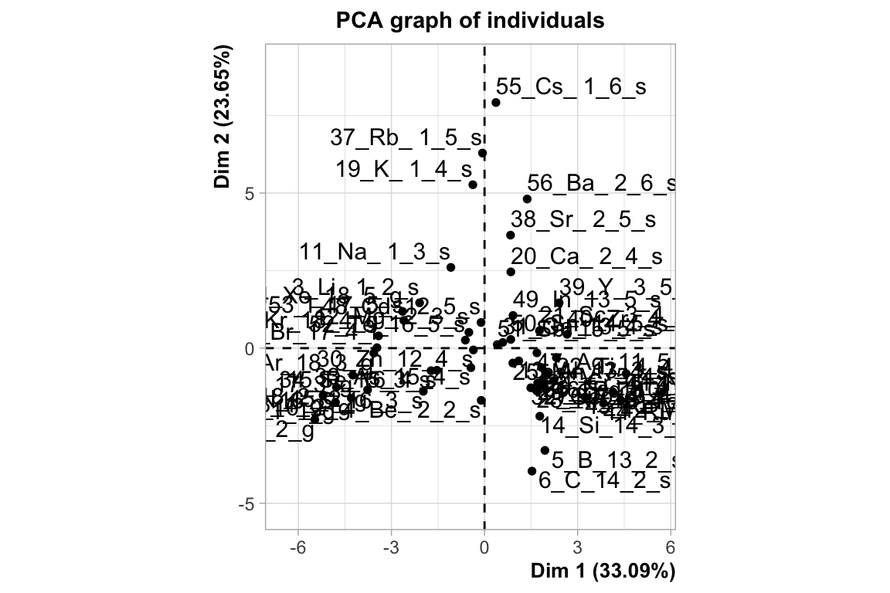
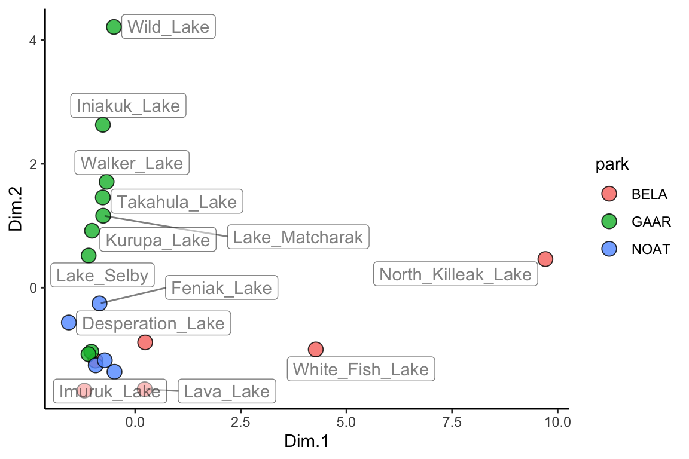

C FAQ
C.1 Filtering
dplyr::filter(<data>, <variable> < 18) ## less than 18
dplyr::filter(<data>, <variable> <= 18) ## less than or equal to 18
dplyr::filter(<data>, <variable> > 18) ## greater than 18
dplyr::filter(<data>, <variable> >= 18) ## greater than or equal to 18
dplyr::filter(<data>, <variable> == 18) ## equals than 18
dplyr::filter(<data>, <variable> != 18) ## not equal to 18
dplyr::filter(<data>, <variable> == 18 | <variable> == 19) ## equal to 18 or 19
C.2 Order categorical axes
Under normal plotting scenario:
library(tidyverse)
NY_trees <- read_csv("https://thebustalab.github.io/R_For_Chemists/sample_data/NY_trees.csv")
## Parsed with column specification:
## cols(
## tree_height = col_double(),
## tree_diameter = col_double(),
## address = col_character(),
## tree_loc = col_character(),
## pit_type = col_character(),
## soil_lvl = col_character(),
## status = col_character(),
## spc_latin = col_character(),
## spc_common = col_character(),
## trunk_dmg = col_character(),
## zipcode = col_double(),
## boroname = col_character(),
## latitude = col_double(),
## longitude = col_double()
## )
NY_trees
## # A tibble: 378,762 x 14
## tree_height tree_diameter address tree_loc pit_type soil_lvl status
## <dbl> <dbl> <chr> <chr> <chr> <chr> <chr>
## 1 21.1 6 1139 5… Front Sidewal… Level Good
## 2 59.0 6 2220 B… Across Sidewal… Level Good
## 3 92.4 13 2254 B… Across Sidewal… Level Good
## 4 50.2 15 2332 B… Across Sidewal… Level Good
## 5 95.0 21 2361 E… Front Sidewal… Level Poor
## 6 67.5 19 2409 E… Front Continu… Level Good
## 7 75.3 11 1481 E… Front Lawn Level Excel…
## 8 27.9 7 1129 5… Front Sidewal… Level Good
## 9 111. 26 2076 E… Across Sidewal… Level Excel…
## 10 83.9 20 2025 E… Front Sidewal… Level Excel…
## # … with 378,752 more rows, and 7 more variables: spc_latin <chr>,
## # spc_common <chr>, trunk_dmg <chr>, zipcode <dbl>, boroname <chr>,
## # latitude <dbl>, longitude <dbl>
tree_data_status <- group_by(.data = NY_trees, status)
tree_data_status
## # A tibble: 378,762 x 14
## tree_height tree_diameter address tree_loc pit_type soil_lvl status
## <dbl> <dbl> <chr> <chr> <chr> <chr> <chr>
## 1 21.1 6 1139 5… Front Sidewal… Level Good
## 2 59.0 6 2220 B… Across Sidewal… Level Good
## 3 92.4 13 2254 B… Across Sidewal… Level Good
## 4 50.2 15 2332 B… Across Sidewal… Level Good
## 5 95.0 21 2361 E… Front Sidewal… Level Poor
## 6 67.5 19 2409 E… Front Continu… Level Good
## 7 75.3 11 1481 E… Front Lawn Level Excel…
## 8 27.9 7 1129 5… Front Sidewal… Level Good
## 9 111. 26 2076 E… Across Sidewal… Level Excel…
## 10 83.9 20 2025 E… Front Sidewal… Level Excel…
## # … with 378,752 more rows, and 7 more variables: spc_latin <chr>,
## # spc_common <chr>, trunk_dmg <chr>, zipcode <dbl>, boroname <chr>,
## # latitude <dbl>, longitude <dbl>
tree_data_status_summary <- summarize(.data = tree_data_status, mean_height = mean(tree_height), stdev_height = sd(tree_height))
status_color <- c("red","darkorange","gold","darkgreen")
names(status_color) <- c("Dead", "Poor", "Good", "Excellent")
ggplot(data = tree_data_status_summary) +
geom_pointrange(aes(x = status,
y = mean_height,
ymin = mean_height -stdev_height,
ymax = mean_height + stdev_height), color = "navy") +
geom_point(data = filter(NY_trees, tree_height > 150),
aes(x = status, y = tree_height, fill = status), stroke = 1.5, shape = 21, size = 5) +
theme_bw() +
scale_fill_manual(values = status_color)
But what if we want the order on the x-axis to be from worst status to best? We need to make the status column into factors (a list of characters that has an order other than alphabetical). Here’s how:
tree_data_status_summary$status <- factor(tree_data_status_summary$status, levels = c("Dead", "Poor", "Good", "Excellent")) # note that we specify the order we want right here in "levels"...
ggplot(data = tree_data_status_summary) +
geom_pointrange(aes(x = status,
y = mean_height,
ymin = mean_height -stdev_height,
ymax = mean_height + stdev_height), color = "navy") +
geom_point(data = filter(NY_trees, tree_height > 150),
aes(x = status, y = tree_height, fill = status), stroke = 1.5, shape = 21, size = 5) +
theme_bw() +
scale_fill_manual(values = status_color)